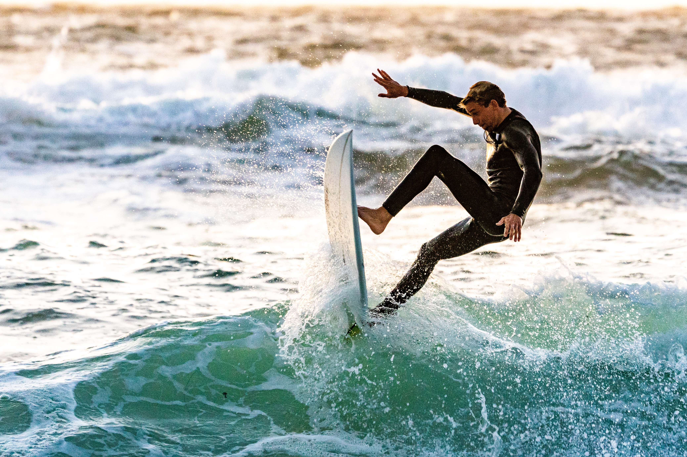

Welcome to your dream Destination
Sunrise Retreat is a unique hideaway with soul and character, a break from reality, the ability to explore and find what you’re passionate about.

Purify your mind
Explore indescribable feelings, joy, friendships, a source of fear, a spiritual connection, and a path to self-discovery.

Travel with Soul
Start your day with an activating session every morning